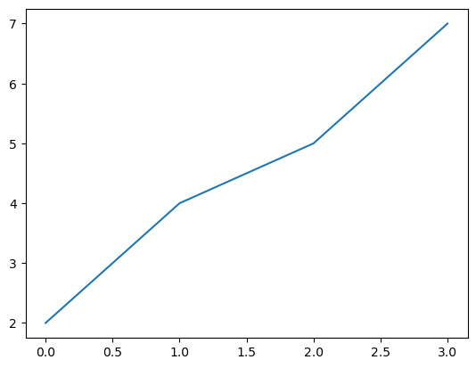

import pandas as pd
import numpy as np
import matplotlib.pyplot as plt
import plotly.express as px
import plotly.graph_objs as go
import plotly.figure_factory as ffPlotly
使用plotly 绘制图形
基本图形
参见: plotly文档
ts = pd.Series(np.random.randn(1000), index=pd.date_range("1/1/2000", periods=1000))
ts = ts.cumsum()
ts.plot()<Axes: >df = pd.DataFrame(np.random.randn(1000,4), index=ts.index, columns=list("ABCD"))
df = df.cumsum()
plt.figure()
df.plot()
plt.legend(loc='best')<matplotlib.legend.Legend><Figure size 640x480 with 0 Axes>
折线图
data = np.arange(10)
dataarray([0, 1, 2, 3, 4, 5, 6, 7, 8, 9])plt.plot(data)d2 = [2,4,5,7]
plt.plot(d2)
fig = plt.figure()
ax1 = fig.add_subplot(2,2,1)
ax2 = fig.add_subplot(2,2,2)
ax3 = fig.add_subplot(2,2,3)# fig.savefig('aa.jpg') # 保存图像np.random.randn(50).cumsum()array([-0.65497875, -0.87539609, -1.95037822, -2.55182361, -0.95400323,
0.42055803, -0.02399923, 0.77984132, 0.94048919, -0.2804123 ,
-1.26969177, -0.8656517 , -0.73684343, -0.429114 , -2.28301825,
-1.20596026, -1.89069725, -0.66237253, -2.00394807, -2.07219641,
-3.07694994, -2.13044571, -2.27133694, -2.35227459, -2.07804544,
-2.65075765, -4.16473185, -5.79079532, -5.80918646, -6.886709 ,
-6.48238632, -6.79420837, -5.93776663, -6.65007544, -6.63828068,
-6.36765117, -5.36893642, -5.1920758 , -5.13324687, -4.06667904,
-3.46112112, -2.23527842, -2.44551486, 0.21841808, 1.82434059,
1.50840004, 2.83121464, 2.01716621, 1.7440124 , 2.70610864])plt.plot(np.random.randn(50).cumsum(), 'k--')dn = np.random.randn(5)
print(dn)
print(dn.cumsum())[ 1.0926909 0.27452563 0.06956881 0.64107944 -0.46210662]
[1.0926909 1.36721653 1.43678535 2.07786478 1.61575816]s = pd.Series(np.random.randn(10).cumsum(), index=np.arange(0,100,10))s.plot()<Axes: >热力图
import plotly.figure_factory as ff
z = [[1.1, .3, .5, .7, .9],
[1, .8, .6, .4, .2],
[.2, 0, .5, .7, .9],
[.9, .8, .4, .2, 0]]
fig = ff.create_annotated_heatmap(z)
fig.show()Unable to display output for mime type(s): application/vnd.plotly.v1+json热力图自定义颜色
import plotly.figure_factory as ff
z = [[1.1, .3, .5, .7, .9],
[1, .8, .6, .4, .2],
[.2, 0, .5, .7, .9],
[.9, .8, .4, .2, 0]]
# 添加参数：colorscale
fig = ff.create_annotated_heatmap(z,colorscale='Viridis')
fig.show()Unable to display output for mime type(s): application/vnd.plotly.v1+json矩形图
柱形图有两种histogram和bar
- hostogram用来描述numerical变量，需要指定参数nbins，表示变量的长度
- bar用来描述categorical类型的变量，对变量进行分类
import plotly.express as px
df = px.data.tips()
fig = px.histogram(df, x="total_bill", nbins=5)
fig.show()Unable to display output for mime type(s): application/vnd.plotly.v1+jsondf| total_bill | tip | sex | smoker | day | time | size | |
|---|---|---|---|---|---|---|---|
| 0 | 16.99 | 1.01 | Female | No | Sun | Dinner | 2 |
| 1 | 10.34 | 1.66 | Male | No | Sun | Dinner | 3 |
| 2 | 21.01 | 3.50 | Male | No | Sun | Dinner | 3 |
| 3 | 23.68 | 3.31 | Male | No | Sun | Dinner | 2 |
| 4 | 24.59 | 3.61 | Female | No | Sun | Dinner | 4 |
| ... | ... | ... | ... | ... | ... | ... | ... |
| 239 | 29.03 | 5.92 | Male | No | Sat | Dinner | 3 |
| 240 | 27.18 | 2.00 | Female | Yes | Sat | Dinner | 2 |
| 241 | 22.67 | 2.00 | Male | Yes | Sat | Dinner | 2 |
| 242 | 17.82 | 1.75 | Male | No | Sat | Dinner | 2 |
| 243 | 18.78 | 3.00 | Female | No | Thur | Dinner | 2 |
244 rows × 7 columns
px.bar(df, x=df.index, y="total_bill")Unable to display output for mime type(s): application/vnd.plotly.v1+json调整axis
import plotly.express as px
fig = px.bar(x=["a","a","b",3], y=[1,2,3,4])
fig.show()Unable to display output for mime type(s): application/vnd.plotly.v1+jsonfig.update_xaxes(type='category')
fig.show()Unable to display output for mime type(s): application/vnd.plotly.v1+json散列图(Scatter)
import plotly.express as px
df = px.data.iris()
print(df)
fig = px.scatter(df, x="sepal_width", y="sepal_length", color="species",
size='petal_length', hover_data=['petal_width'])
fig.show() sepal_length sepal_width petal_length petal_width species \
0 5.1 3.5 1.4 0.2 setosa
1 4.9 3.0 1.4 0.2 setosa
2 4.7 3.2 1.3 0.2 setosa
3 4.6 3.1 1.5 0.2 setosa
4 5.0 3.6 1.4 0.2 setosa
.. ... ... ... ... ...
145 6.7 3.0 5.2 2.3 virginica
146 6.3 2.5 5.0 1.9 virginica
147 6.5 3.0 5.2 2.0 virginica
148 6.2 3.4 5.4 2.3 virginica
149 5.9 3.0 5.1 1.8 virginica
species_id
0 1
1 1
2 1
3 1
4 1
.. ...
145 3
146 3
147 3
148 3
149 3
[150 rows x 6 columns]Unable to display output for mime type(s): application/vnd.plotly.v1+json散列图配置边缘分布图
import plotly.express as px
df = px.data.iris()
fig = px.scatter(df, x="sepal_length", y="sepal_width", marginal_x = "box",marginal_y = "violin")
fig.show()Unable to display output for mime type(s): application/vnd.plotly.v1+json